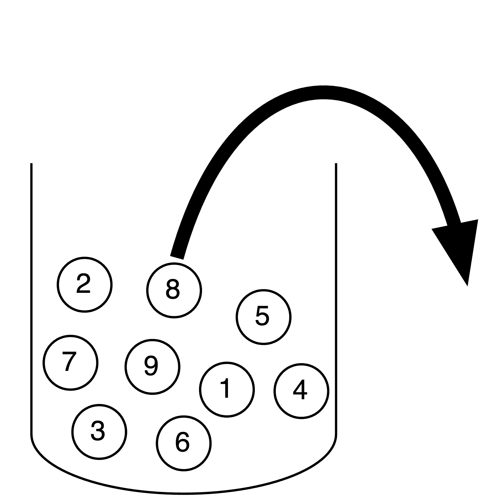
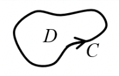
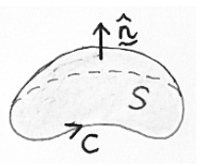
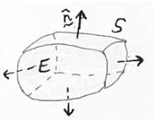

Equation sheet
Contents
Equation sheet#
Some combinations and identities#
The Laplacian#
For a scalar field \(f, \quad \nabla^{2} f=\vec{\nabla} \cdot \vec{\nabla} f=\frac{\partial^{2} f}{\partial x^{2}}+\frac{\partial^{2} f}{\partial y^{2}}+\frac{\partial^{2} f}{\partial z^{2}} \quad\) where \(\nabla^{2}\) is the Laplacian operator.
(It occurs in many important equations, such as the wave equation \(\nabla^{2} f-\frac{1}{c^{2}} \frac{\partial^{2} f}{\partial t^{2}}=0\), and as Laplace’s equation, the diffusion equation, the Schrödinger equation, etc.)
The Laplacian of a vector field \(\overrightarrow{\boldsymbol{F}}=M(x, y, z) \mathbf{i}+N(x, y, z) \mathbf{j}+P(x, y, z) \mathbf{k}\) is also defined:
Curl Grad and Conservative Fields#
For any scalar field \(f(x, y, z)\) with continuous second derivatives, \(\vec{\nabla} \times \vec{\nabla} f=\overrightarrow{\mathbf{0}}\) (see Q17).
Hence for any conservative vector field \(\overrightarrow{\boldsymbol{F}}=\overrightarrow{\boldsymbol{\nabla}} f\) we have \(\overrightarrow{\boldsymbol{\nabla}} \times \overrightarrow{\boldsymbol{F}}=\overrightarrow{\mathbf{0}}\). That is, conservative fields are irrotational.
It can also be proved that if \(\vec{\nabla} \times \overrightarrow{\boldsymbol{F}}=\overrightarrow{\mathbf{0}}\) then \(\overrightarrow{\boldsymbol{F}}\) is conservative. This provides a simple test for whether a 3D field is conservative.
Some other identities#
There is a useful identity
For any vector field \(\overrightarrow{\boldsymbol{F}}, \quad \overrightarrow{\boldsymbol{\nabla}} \cdot(\overrightarrow{\boldsymbol{\nabla}} \times \overrightarrow{\boldsymbol{F}})=0 \quad\) (see Q19).
Theorem Summary#
FTC for line integrals#

Green’s theorem#

Stoke’s theorem#

Divergence theorem#
